A nossa empresa conta com mais de 30 anos de experiência. O nosso foco está na qualidade dos nossos serviços e do relacionamento com os nossos clientes.
Sobre nós
A “FM Consultores Associados” foi constituída em 25 de Maio de 1990.
O seu fundador Fernando Mateus é licenciado em Organização e Gestão de Empresa, inscrito da ordem dos Contabilistas Certificados desde 4 de agosto de 1987 com o numero 23776.
É membro de Órgãos Sociais de diversas empresas privadas tendo iniciado a sua atividade profissional chefiando os Serviços de Contabilidade da Associação Industrial Portuguesa.
Serviços
Contabilidade Organizada
Fiscalidade
Gestão de Clientes
Consultoria
Recursos Humanos
Parcerias
- AICA
Assoc. Internac. de Criticos de Arte - BEBOT
Assoc. Para a Promoção da Arte Robótica e Tecnológica - XXS
Assoc. Portuguesa de Apoio ao Bebe Prematuro - APDC
Assoc. Portuguesa para o Desenvolvimento das Comunicações - Associação Portuguesa de Facility Services
- Hélice
Fotógrafos que usam a Fotografia – Associação - Obs
Oficina de Tavira Associação Cultural - Idanhaculta
Assoc. de Desenvolvimento Social - Aprender a Empreender
Assoc. Jovens Empreendedores de Portugal - APHM
Assoc. Portuguesa de Habitação Municipal - APOEP
Assoc. Port. Orientadores Escolares e Profissionais - AERLIS
Associação Empresarial Região de Lisboa
Os nossos clientes
Desde da sua fundação a nossa empresa veio sempre a crescer e conta com uma grande carteira de clientes de diferentes setores.
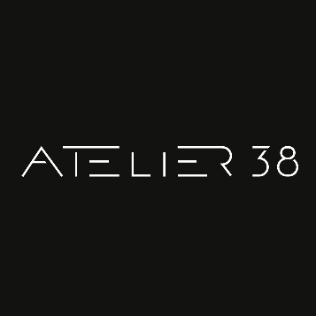 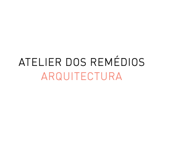 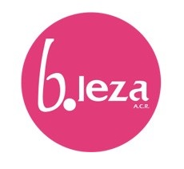 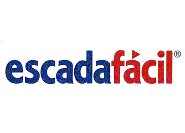 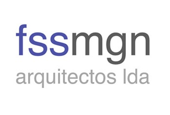 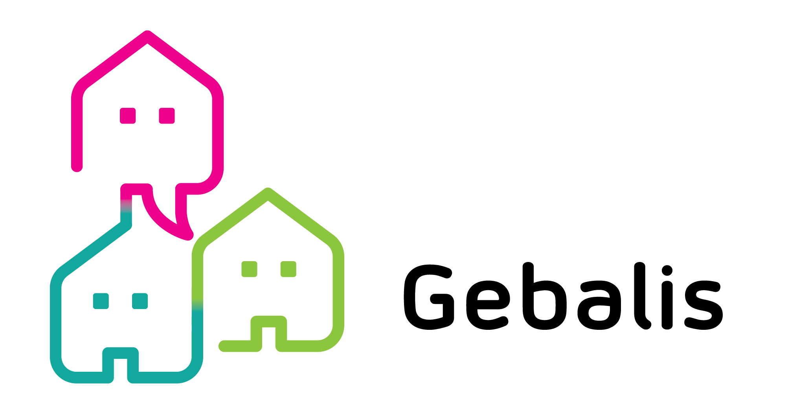 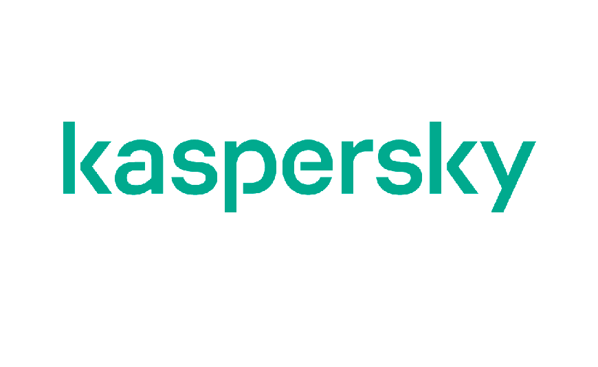 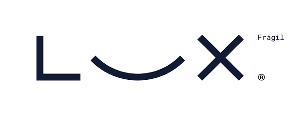 
 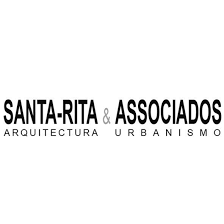 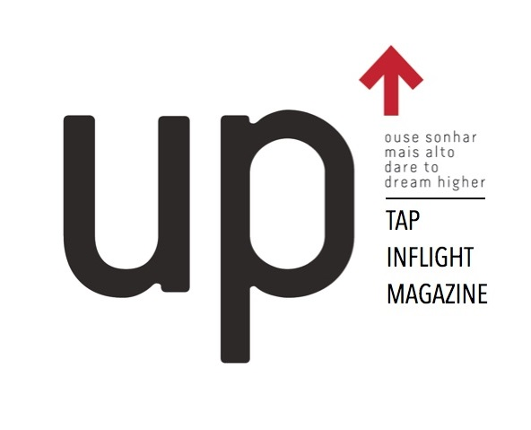 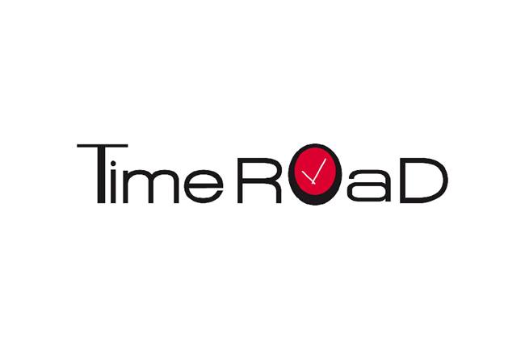 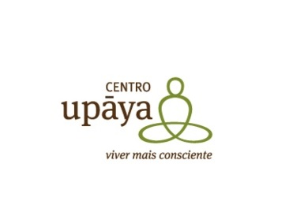
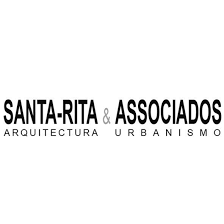 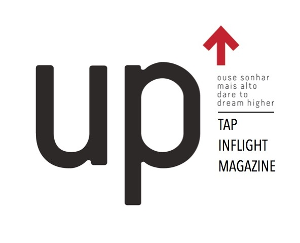 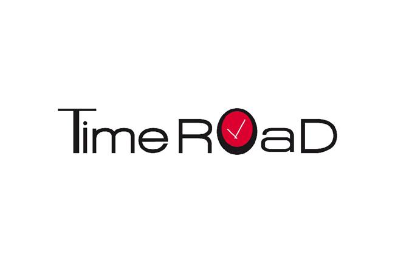 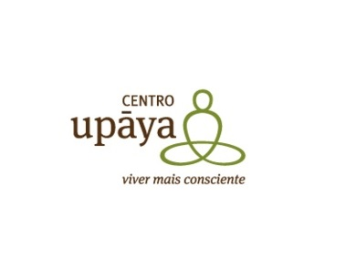
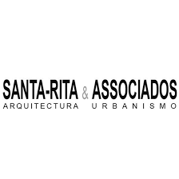 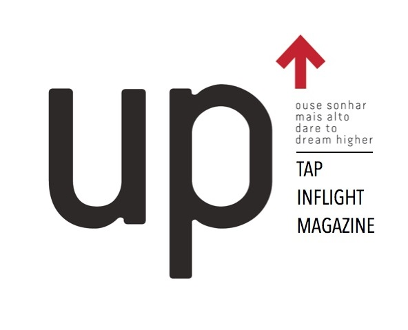 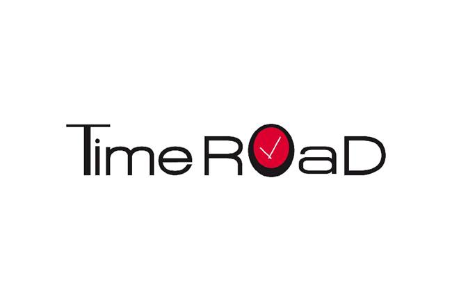 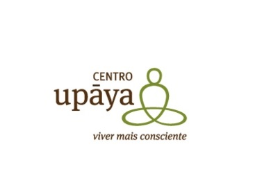